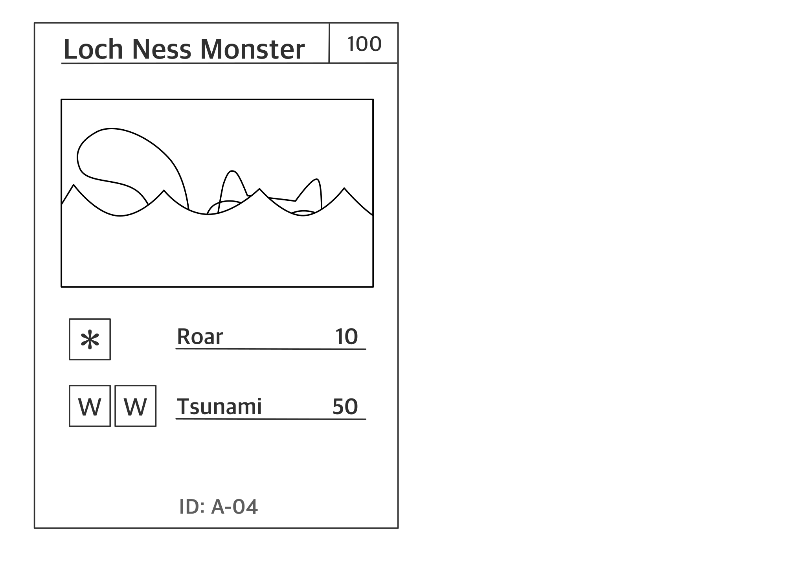
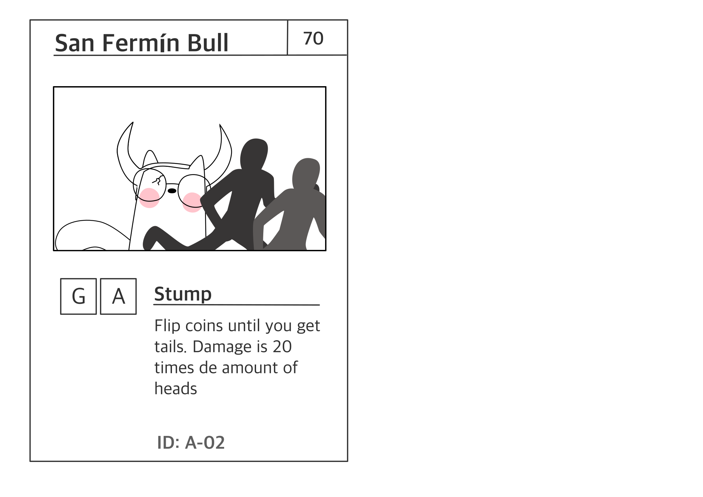
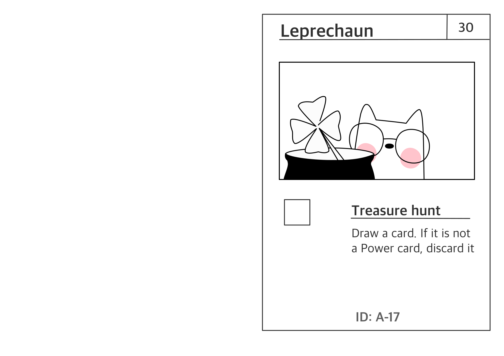
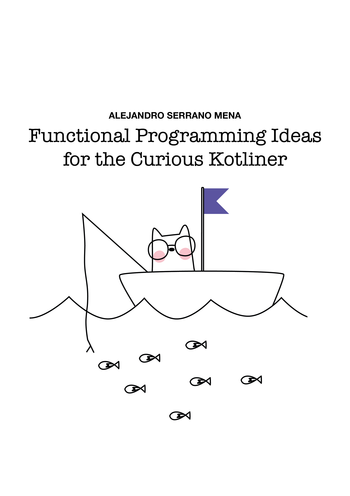

class: center, middle, title-slide count: false # **Actions as data** ## Continued <br /> .less-line-height[ Alejandro Serrano @ Lambda World 2024 .grey[🐦 @trupill - 🏠 serranofp.com] ] --- # Goals of this talk _Technique to build nicer DSLs_ 🧱 Actions as data <br /> ⚖️ Benefits and drawbacks 🎭 Actions as interfaces 🤝 Implementation using `suspend` --- class: center, middle, title-slide # 🧱 Actions as data --- # 😸 Cat & Battle Trading card game in the spirit of Pokémon, Magic: The Gathering, One Piece... <table style="margin-top: -15px;"> <tr></tr> <td style="vertical-align: top"></td> <td width="65%"> <b>Goal</b>: defeat other monsters <ul style="margin-top: 5px"> <li>For this you use <i>attacks</i>, which deal some <i>damage</i></li> <li><i>Health / life points</i> define how much damage a monster can take</li> </ul> </td> </tr> </table> --- # ⚔️ Attacks <table> <tr></tr> <td style="vertical-align: top"></td> <td width="65%"> Our focus are <b>attacks</b> <ul style="margin-top: 5px"> <li>Name</li> <li>Energy cost</li> <li>Damage</li> </ul> </td> </tr> </table> -- .very-little-margin-top[ .code70[ ```kotlin data class Attack( val name: String, val cost: List<Power>, val damage: Int ) ``` ] ] --- # ⚔️ Attacks <table> <tr></tr> <td style="vertical-align: top"></td> <td width="65%"> Our focus are <b>attacks</b> <ul style="margin-top: 5px"> <li>Name</li> <li>Energy cost</li> <li>Damage</li> </ul> </td> </tr> </table> .very-little-margin-top[ .code70[ ```kotlin val tsunami = Attack( "Tsunami", listOf(Power.WATER, Power.WATER), 50 ) ``` ] ] --- # ⚔️⚔️ More complex attacks  <img src="img/Yeti.svg" width="65%" />  --- # ⚔️⚔️ More complex attacks ```kotlin data class Attack(..., val damage: Int) ``` ## .grey[We need to extend our model] .margin-top[ - Draw and discard cards - Coin flips - Conditionals and loops - Conditions may involve cards ] --- # 🤕 Damage 1️⃣ Replace .grey[damage] by .grey[action] ```kotlin data class Attack(..., val action: Action) sealed interface Action ``` -- 2️⃣ Make .grey[damage] one of those .grey[actions] ```kotlin data class Damage(val points: Int): Action ``` --- # 🪙 Coin flip .code70[ ```kotlin data class FlipCoin( val ifHeads: () -> Action, val ifTails: () -> Action ): Action ``` ] -- .font80[ <i><b>Sight</b> (50): Flip a coin. If tails, the attack does nothing.</i> ] .code70[ ```kotlin val sightAction: Action = FlipCoin( ifHeads = { Damage(50) }, ifTails = { Damage(0) } ) ``` ] .font80[ This is called an *Abstract Syntax Tree* (AST) ] --- # 🤖 Execution We can simulate the coin flips .code70[ ```kotlin tailrec fun Action.execute(): Int = when (this) { is Damage -> points is FlipCoin -> when (Random.nextBoolean()) { true -> ifHeads().execute() false -> ifTails().execute() } } ``` ] This is just _one_ of _many_ possible **interpretations** --- # 🔁 Repeat until tails <i><b>Stump:</b> Flip a coin until you get tails. Damage is 20 times the amount of heads.</i> -- We use _recursion_ to model looping .code60[ ```kotlin fun stumpAction(): Action { fun worker(accumulatedDamage: Int): Action = FlipCoin(ifHeads = { worker(accumulatedDamage + 20) }, ifTails = { Damage(accumulatedDamage)) } // start with 0 as damage return worker(0) } ``` ] --- # 🃏 Draw and discard <i><b>Treasure hunt:</b> Draw a card. If it is not a Power card, discard it.</i> .code70[ ```kotlin data class Discard( val card: Card, val next: () -> Action ): Action data class DrawCard( val next: (Card) -> Action ): Action ``` ] We always have a "next" action to perform --- # 🃏 Draw and discard <i><b>Treasure hunt:</b> Draw a card. If it is not a Power card, discard it.</i> .code70[ ```kotlin val treasureHunt: Action = DrawCard { card -> when (card) { is PowerCard -> Damage(0) // keep card else -> Discard(card) { Damage(0) } } } ``` ] --- # 🧱 The general pattern This is called **initial** style .code50[ ```kotlin // case that "ends" the computation data Damage(val points: Int): Action // several operations offered by the DSL data class FlipCoin(val next: (FlipOutcome) -> Action): Action data class Discard(val card: Card, val next: () -> Action): Action data class DrawCard(val next: (Card) -> Action): Action ``` ] Every operation ends with a _continuation_ --- # 🧱 The general pattern This is called **initial** style .code50[ ```kotlin // case that "ends" the computation data Done<A>(val result: A): Action<A> // several operations offered by the DSL data class FlipCoin<A>(val next: (FlipOutcome) -> Action<A>): Action<A> data class Discard<A>(val card: Card, val next: () -> Action<A>): Action<A> data class DrawCard<A>(val next: (Card) -> Action<A>): Action<A> ``` ] Every operation ends with a _continuation_ It is useful to make the result case generic --- # 🧱 Initial style ## Trade-offs 👍 Writing interpretations <br /> 🔍 Just inspect the different cases 🏗️ Optimization and analysis is possible 👎 Writing the actual actions <br /> 🪺 Nesting and more nesting <br /> 🪢 Lambdas everywhere --- # What if...? .code70[ ```kotlin suspend fun ActionScope.sightAction(): Int = when (flipCoin()) { FlipOutcome.HEADS -> 50 FlipOutcome.TAILS -> 0 } // local mutability is fine suspend fun ActionScope.stumpAction(): Int { var accumulatedDamage = 0 while (flipCoin() == FlipOutcome.HEADS) accumulatedDamage += 20 return accumulatedDamage } ``` ] --- class: center, middle, title-slide # 🎭 Actions as interfaces --- # 🗃️ What do we need? .code70[ ```kotlin suspend fun ActionScope.sightAction(): Int = when (flipCoin()) { FlipOutcome.HEADS -> 50 FlipOutcome.TAILS -> 0 } ``` ] We can already make this type check! 🧙 -- .code70[ ```kotlin interface ActionScope { suspend fun flipCoin(): FlipOutcome // more shall come } ``` ] --- # 🤖 Execution Writing a simple one is quite easy .code70[ ```kotlin class StatefulActionScope: ActionScope { suspend fun flipCoin(): FlipOutcome = when (Random.nextBoolean()) { true -> FlipOutcome.HEADS false -> FlipOutcome.TAILS } } // run the action StatefulActionScope().sightAction() ``` ] --- # 🎭 Final style Use _interfaces_ to model operations -- ## .grey[Harder in pure FP languages 😅] In Haskell you use a _type class_ <br /> over a _type constructor_ .code70[ ```haskell class Action action where done :: x -> action x flipCoin :: action FlipOutcome ``` ] --- # 🎭 Final style Use _interfaces_ to model operations 👍 Writing the actual actions <br /> 🏕️ Very natural in OOP languages 📈 Relatively easy to extend 👎 Optimization and analysis --- # 🏗️ Analysis and optimization Very important for some DSLs - Optimize a query before sending it - Understand all possible outcomes - Choose strategy for concurrency -- ## They are .grey[impossible] in this style ⬛ Actions are black boxes --- # 🏗️ Analysis and optimization Very important for some DSLs - Optimize a query before sending it - Understand all possible outcomes - Choose strategy for concurrency ## They are .grey[impossible]<sup>*</sup> in this style ⬛ Actions are black boxes <small><sup>*</sup> Unless you are Oleg Kiselyov — <code>okmij.org</code></small> --- # 🌄 We want it all! Nicer syntax from the final style (interfaces) Analyzability from the initial style (data) ```kotlin fun <A> action( block: ActionScope.() -> A // from final ): Action<A> // to initial ``` --- # 🌄 We want it all! Nicer syntax from the final style (interfaces) Analyzability from the initial style (data) ```kotlin fun <A> action( block: suspend ActionScope.() -> A ): Action<A> ``` ## We can have it all, if we `suspend` --- class: center, middle, title-slide # ⛓️ Coroutines --- # ⛓️ Coroutines in Kotlin In Kotlin you can mark a function as `suspend` ```kotlin suspend fun download(url: Url): ByteArray ``` -- Under the hood, the function is compiled to ```kotlin suspend fun download( url: Url, next: (ByteArray) -> Unit // continuation ): Unit ``` --- # ⛓️ Coroutines in Kotlin ## Why is this useful? It gives control to decide _when_ and _how_ to continue execution -- The _main_ use is **cooperative concurrency** <br /> (available in `kotlinx.coroutines`) - Non-blocking operations - Scheduling computations --- # 🪄 `suspendCoroutine` ## 😕 How do you obtain the continuation? In principle it is hidden by the compiler .code70[ ```kotlin suspend inline fun <T> suspendCoroutine( crossinline block: (Continuation<T>) -> Unit ): T // use 'resume' to call the continuation suspendCoroutine { k -> k.resume(20) } ``` ] --- class: center, middle, title-slide # 🤝 Bridging the gap --- # 🗺️ Plan <center> <p> <code>suspend</code> function with <code>ActionScope</code> <br /> (<code>Continuation</code> under the hood) </p> <p>⟱</p> <p>Variant of <code>Action</code> using <code>Continuation</code></p> <p>⟱</p> <p>Initial style <code>Action</code></p> </center> --- # 🧱 Pseudo-initial style Almost like `Action` but using a `Continuation` .code70[ ```kotlin sealed interface State<A> { data class Done<A>(val result: A): State<A> data class FlipCoin<A>( val next: Continuation<FlipOutcome> // ❗ ): State<A> data class Discard<A>( val card: Card, val next: Continuation<Unit> // ❗ ): State<A> // and so on } ``` ] --- # 💾 Stateful computation Careful interplay between two elements .code70[ ```kotlin class ActionScopeImpl: ActionScope { private var current: State<A>? = null tailrec fun execute(): Action<A> = when (val c = current) { ... } } ``` ] `execute` reads the `current` state <br /> and advances until the next continuation --- # 🔗 Interplay, graphically --- # 💾 Actions set the state .code60[ ```kotlin class ActionScopeImpl: ActionScope { private var current: State<A>? = null override suspend fun flipCoin(): FlipOutcome = suspendCoroutine { k -> current = State.FlipCoin(k) } override suspend fun discard(card: Card): Unit = suspendCoroutine { k -> current = State.Discard(card, k) } } ``` ] --- # 🛠️ From coroutines to initial style .code60[ ```kotlin tailrec fun execute(): Action<A> = when (val c = current) { null -> throw IllegalStateException("empty trace") is State.Done -> Done(c.result) is State.FlipCoin -> FlipCoin { flipOutcome -> c.next.resume(flipOutcome) execute() } // other cases } ``` ] -- 1️⃣ The (final style) computation calls `flipCoin` <br /> 2️⃣ `current` is set to `State.FlipCoin` <br /> 3️⃣ When we `execute` we produce `FlipCoin` --- # 🔗 Interplay, graphically --- # ▶️ Starting everything ## How sets `current` the first time? -- .code70[ ```kotlin fun <R, T> (suspend R.() -> T).startCoroutine( receiver: R, completion: Continuation<T> ) ``` ] Executes the `suspend` computation <br /> passing `completion` as continuation -- ## What should we do at the end? --- # 🚀 Putting everything together .code50[ ```kotlin fun <A> action(block: suspend ActionScope.() -> A): Action<A> { val machine = ActionScopeImpl<A>() block.startCoroutine( machine, Continuation(EmptyCoroutineContext) { machine.done(it.getOrThrow()) } ) return machine.execute() } ``` ] --- # 🚀 Putting everything together .code50[ ```kotlin fun <A> action(block: suspend ActionScope.() -> A): Action<A> { val machine = ActionScopeImpl<A>() block.startCoroutine( // 1️⃣ machine, Continuation(EmptyCoroutineContext) { machine.done(it.getOrThrow()) } ) return machine.execute() } ``` ] .font80[ 1️⃣ We start executing the coroutine 🛑 On the first call to an operation: .little-margin-top[ - `current` is set to the corresponding `State` - execution is suspended ] ] --- # 🚀 Putting everything together .code50[ ```kotlin fun <A> action(block: suspend ActionScope.() -> A): Action<A> { val machine = ActionScopeImpl<A>() block.startCoroutine( machine, Continuation(EmptyCoroutineContext) { machine.done(it.getOrThrow()) } ) return machine.execute() // 2️⃣ } ``` ] .font80[ 2️⃣ `execute` is called Uses the `current` state to produce one initial block When `next` is then called, we `resume` the coroutine ] --- # 🚀 Putting everything together .code50[ ```kotlin fun <A> action(block: suspend ActionScope.() -> A): Action<A> { val machine = ActionScopeImpl<A>() block.startCoroutine( machine, Continuation(EmptyCoroutineContext) { machine.done(it.getOrThrow()) } ) return machine.execute() } ``` ] .font80[ We enter in a cycle between: - executing until the next suspension point - producing an additional initial block - resuming the coroutine ] --- # 🚀 Putting everything together .code50[ ```kotlin fun <A> action(block: suspend ActionScope.() -> A): Action<A> { val machine = ActionScopeImpl<A>() block.startCoroutine( machine, Continuation(EmptyCoroutineContext) { machine.done(it.getOrThrow()) // 3️⃣ } ) return machine.execute() } ``` ] .font80[ 3️⃣ At some point the coroutine ends execution We produce the last `Done` block <br /> using the result of the coroutine (`it`) ] --- # 🔗 Interplay, graphically --- # 🧩 Inikio Automates all of this boilerplate .code70[ ```kotlin @InitialStyleDSL sealed interface Action<A> // and all the subclasses ``` ] .margin-top[ - Creates an `ActionBuilder` with all operations - And the corresponding `action` runner ] --- # 🧑🎓 Conclusion Two different ways to model actions - Initial style, using data - Final style, using interfaces They have opposing trade-offs - _Ease of use_ of final style - _Analyzability_ of initial style We bridge them using _coroutines_ --- # 👻 Monads? Another way to get nicer syntax for initial style .code70[ ```kotlin infix fun <A, B> Action<A>.then( // flatMap, bind other: (A) -> Action<B> ): Action<B> ``` ] Several languages have special support for this - Haskell has `do` notation - Scala has `for` comprehensions --- # 📖 FP Ideas for the Curious Kotliner ## `leanpub.com/fp-ideas-kotlin` <table style="margin-top: 40px;"> <tr> <td style="vertical-align: top"></td> <td width="68%"> <ul style="margin-top: 5px"> <li>Modeling with <span class="remark-inline-code">data</span> + <span class="remark-inline-code">sealed</span></li> <li>Errors and validation</li> <li>Immutable data transformation (with optics)</li> <li><span class="remark-inline-code">suspend</span> and concurrency</li> </ul> </td> </tr> </table> --- class: center, middle, title-slide # 🙋 Questions and comments --- class: center, middle, title-slide # 🤩 It's been a pleasure